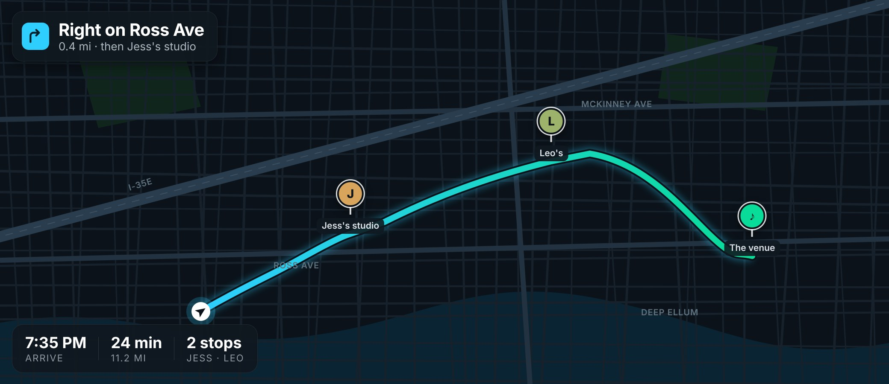

A day in the Loop
Owen has used Loop for a year. It knows the people he keeps up with, the places he goes back to, and the music he can't stop playing. So it does the part every group chat gets stuck on: it finds the time that works for everyone, the place that's easiest for all of them to reach, and the thing they'll all love. Here's what a Friday looks like when Loop takes the lead, including the people and places Owen loves.
Loop knows when your people are free
Owen, Jess and Leo are free tonight, and an artist they all love just added a show 20 minutes away. Loop lines it up before he's awake.
Juniper Vale added a surprise show tonight
Announced last night. 8:15 PM, 20 min away. Leo's already in, and Jess is free after 6. Are you in?
Loop brings everyone in with one tap
While he slept, Jess said yes too. Now Loop has one question left for him. One tap, and three people have a plan.
Jess and Leo are in. Are you?
Jess said yes at 6:58. Juniper Vale's surprise show, 8:15, 20 min away.
Tickets bought ✓
Yours is in your Apple Wallet and Jess has hers. Leo knows you're in, and I'll tell you when to leave.
Loop gives everyone the same plan, with what each person needs
Jess gets the same plan, with her own time to leave.
Owen got your ticket
Juniper Vale tonight, 8:15, with Owen and Leo. It's in your Wallet. 18 min from the studio, so leave by 7:10.
All set ✓
I'll nudge you at 7 to wrap up. Doors at 7:30, and Owen and Leo will be there.
Loop spots what's nearby and worth the stop
The record Owen's been wanting, two minutes off her walk.
Juniper Vale's new album on vinyl, 3 copies left. It's on Owen's wishlist.
Hold a copyI'll remind you at 5:30. Owen won't see this.
Loop keeps everyone on the same page, and looks ahead
Tonight is set. And since next week's New York pitch is on his calendar, Loop plans for that too.
Tonight is set
Jess and Leo are in. Lunch with Mom at 12:00, 9 min walk. She's already there.
Before your New York pitch
Harlow & Finch, a store you saved, has suits 30% off through Sunday. It's 2 min off your walk, and they can tailor by Saturday, before you fly.
Loop fills the table
Owen's cousin Nina flies home from New York tomorrow, and everyone's free Sunday. Loop spots it before anyone does.
Everyone's free Sunday at 6
Nina's back from New York Saturday. Owen, Jess, Leo and Nina are all open. Dinner at your place?
Invites sent ✓
Everyone has it. I'll remind them Sunday morning. Owen's 1 min away.
Loop checks the invite against your travel
Her aunt's dinner and her Saturday flight. Loop already checked that they fit.
Aunt Linda invited you
Sunday dinner, 6 PM. You land at DFW Saturday 4:10, so you're clear. Leo's coming too.
You're in ✓
Linda knows. I'll watch your flight Saturday and tell her if you're running late.
Loop notices when your trips overlap
Owen and Marco are close friends in Loop, and they're both in New York next week. Loop finds the night they're both free and a favorite spot 8 minutes from both hotels.
Owen's in New York next week too
You're both free Wednesday after 6. Bramble & Rye, your favorite from last time, has a table for 2 at 7:30. 8 min from both hotels.
Booked on OpenTable ✓
Party of 2, Wednesday 7:30, Bramble & Rye. Owen's invited. I'll remind you when to leave so you're on time.
Loop plans the pickup
Jess at the studio, Leo at home, doors at 7:30. Eyes on the road, he just says "Pick them up."

Pick up Jess and Leo?
Leave home 6:50. Jess's studio, then Leo's. Adds 12 min. At the venue by 7:35.
Route set ✓
Jess and Leo know. I'll ping them when you're 5 min out.
Loop goes quiet once you're all there
Jess hands him the record. Leo's beside them. The watch says one thing, then goes quiet.
Juniper Vale's on at 8:15. I'll stay quiet till the encore.
OKLoop knows who else is out tonight
Three of his close friends are out, 13 min off the way home.
James, George and Larry are out
They're at The Lantern Room, 13 min off your way home. Bring Jess and Leo?
On the way ✓
Arriving 11:08. James, George and Larry know you're coming.
Skip the back-and-forth.
Let Loop kick off the plan.
In one Friday, Loop got Owen, Jess and Leo to the show together. It found Jess the record, walked Owen to lunch with his mom, filled Linda's table for Sunday with Nina home, lined up a dinner in New York with Marco, and turned the ride home into a night out with James, George and Larry.
Loop finds the time that works for everyone, the place that's easiest for all of you, and the things you'll all love, then gets the plan started.
No endless group chats. No "so what works for everyone?" Just Loop keeping you in touch with the people and places you love.
Bring your friends into Loop and it brings them into your next plan.
Try the iPhone beta